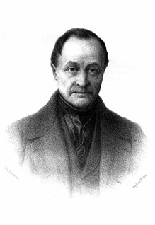
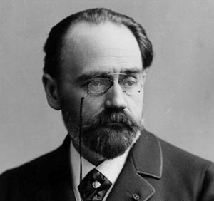
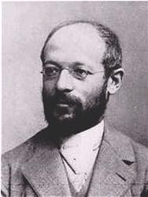

Lược trích từ cuốn "Lịch sử và lý thuyết xã hội học" Xã hội học cũng như tâm lý học, là một môn học non trẻ. Mình thấy xã hội học có giao thoa với tâm lý học(không phải một nhánh của tâm lý học) ở phần hành vi con người Tổng quan về xã hội học Về mặt chữ nghĩa, “xã hội học” (Sociology) là kết quả của việc ghép chữ “Socius” hay chữ “Societas” nghĩa là xã hội với chữ “Ology” hay “Logos” có nghĩa là học thuyết, là nghiên cứu. Ra đời vào thế kỷ 19 bởi Auguste Comte, sau này còn có nhiều nhà nghiên cứu và phát triển lý thuyết xã hội học khác như Karl Marx, Herbert Spencer, Emile Durkheim... Xã hội học là khoa học nghiên cứu quy luật của sự nảy sinh, biến đổi và phát triển mối quan hệ giữa con người và xã hội. Các khoa học tự nhiên như vật lý, hoá học, sinh học… đã phát hiện ra các “quy luật tự nhiên” để giải thích thế giới. Thành tựu của KHTN là kho tàng lý luận và công cụ sắc bén cho các nhà tư tưởng xã hội, về cách xây dựng lý thuyết, các mô hình… một cách khoa học. Các nhà triết học và tư tưởng xã hội Pháp cho rằng: Con người chủ yếu bị chi phối bởi các điều kiện và hoàn cảnh xã hội. Họ khẳng định rằng con người có những “quyền tự nhiên” nhất định mà các thiết chế xã hội phải tôn trọng và bảo vệ chứ không được phép chà đạp, vi phạm. Từ đó đã hình thành tư tưởng về sự cần thiết phải xoá bỏ sự áp bức và bất công xã hội, phải thay thế trật tự xã hội cũ bằng một trật tự xã hội mới phù hợp hơn với bản chất con người và đáo ứng nhu cầu cơ bản của con người. Sự biến đổi như vậy cần phải diễn ra một cách hợp lý, hợp pháp, tiến bộ và bằng con đường duy lý, “khai sáng” tư tưởng và nhận thức. Marx lại viết: “Con người làm ra lịch sử của chính mình, nhưng không phải làm theo ý muốn tuỳ tiện của mình, trong những điều kiện tự mình chọn lấy. Mà là trong những điều kiện trực tiếp có trước mắt, đã cho và do quá khứ để lại” Tính chất hai mặt của các vấn đề cơ bản trong xã hội học là chủ đề cho các cuộc tranh luận kéo dài đến nay chưa chấm dứt. Vd các cặp chủ đề như: “con người – xã hội”, “cá nhân – văn hoá”, “tự nhiên – xã hội”, “chủ quan – khách quan”, “chủ thể - khách thể”, “vĩ mô – vi mô”, “định lượng – định tính”, “hành động xã hội – cấu trúc xã hội”… -“Hành động xã hội – cấu trúc xã hội” Hành động xã hội được định nghĩa là tất cả những hành vi và hoạt động của con người, diễn ra trong khung cảnh lịch sử xã hội nhất định. Là hành vi có mục đích, có đối tượng, là hành động hướng tới người khác hay chịu ảnh hưởng của người khác. Cấu trúc là tính hệ thống của một chỉnh thể, là mối liên kết của các bộ phận cấu thành nên một hệ thống. Trong lịch sử có nhiều quan niệm khác nhau về cấu trúc xã hội. Trong khi hành động xã hội của con người bị xã hội hoá, thì bản thân xã hội lại bị “tự nhiên hoá”. Không ít các lý thuyết xã hội học đã sử dụng tiếp cận sinh vật học với các khái niệm như: “cơ thể”, “tiến hoá”, “di truyền”, “hữu cơ”, “thích nghi”, “chọn lọc tự nhiên”, “đấu tranh sinh tồn”, “tự điều chỉnh”… vd như thuyết tiến hoá xã hội của Spencer. -Trường phái nghiên cứu “Vĩ mô – vi mô” Xã hội học vĩ mô: nghiên cứu các quy luật của cả hệ thống xã hội. Vd: Spencer coi hệ thống xã hội như một cơ thể “siêu hữu cơ” gồm các cơ quan, bộ phận thực hiên các chức năng khác nhau nhằm đảm bảo duy trì, “nuôi sống” cơ thể xã hội. Xã hội học vi mô: nghiên cứu hiện tượng của cá nhân, nhóm nhỏ như hành động và tương tác xã hội. Vd: Homans cho rằng tương tác người và hành động xã hội có thể được giải thích bằng cách quy về hành vi tâm lý hoạt động theo nguyên tắc “thưởng – phạt”. Cá nhân có xu hướng lặp lại các hành động mà nhờ đó họ đã được thưởng dưới các hình thức khác nhau. Còn Goffman giải thích rằng các cá nhân hành động giống như các diễn viên đóng vai trên sân khấu. Họ đóng các vai khác nhau nhằm tạo ra ấn tượng và hình ảnh đẹp đẽ về mình ở trong con mắt người khác. Phải chăng đây chính là ý của một câu thường thấy trong giới trẻ: “đời không trả cát-xê, nhưng vì đam mê nên vẫn diễn” ? :v Các nhà xã hội học vĩ mô thường gặp phải khó khăn to lớn là những thay đổi ở cấp xã hội, dân tộc, tổ chức thường trải dài theo thời gian và không gian, diễn ra rất chậm chạp nên khó nghiệm chứng các giả thuyết. Còn ở xã hội học vi mô, khó khăn là các hiện tượng cá nhân diễn ra rất năng động, tinh vi, phức tạp, dù có nắm chắc đặc điểm của từng cá nhân ta vẫn không thể giải thích được hành vi của họ trong nhóm hay hành vi của nhóm người. Ngoài ra, xã hội học vi mô rất khó có thể giải thích hành vi xã hội của hàng nghìn hay hàng triệu cá nhân nếu không sử dụng cách tiếp cận vĩ mô. Vì vậy các nhà nghiên cứu có xu hướng kết hợp cả hai cách phân tích vĩ mô và vi mô.
Tư tưởng của một số nhà xã hội học đương thời Spoiler: Auguste Comte Xã hội học Auguste Comte(1798-1857)  “Xã hội học là khoa học về các quy luật của tổ chức xã hội” – A. Comte Comte nêu rõ đặc trưng cơ bản của triết học thực chứng tương tự như khoa học tự nhiên, là ở chỗ nó coi tất cả các hiện tượng đều tuân theo những quy luật tự nhiên không đổi. Theo Comte, cơ cấu ngành xã hội học bao gồm hai bộ phận cơ bản: + Một là Tĩnh học xã hội(Social Statics) chuyên nghiên cứu thành phần và cấu trúc xã hội của hệ thống xã hội loài người +Hai là Động học xã hội(Social Dynamics) chuyên nghiên cứu quá trình vận động, biến đổi xã hội để tìm ra các quy luật của sự phát triển chung Lúc đầu do bị ảnh hưởng bởi quan niệm của sinh vật học & sinh lý học. Comte coi các cá nhân là những phần tử, “đơn vị” nhỏ nhất cấu thành nên cấu trúc xã hội, tương tự như các tế bào là đơn vị cấu thành nên cơ thể. Và Comte xem một cá nhân là một hệ thống có cấu trúc gồm hai nhóm thành phần chính: -Một là các năng lực và nhu cầu đã có sẵn ở bên trong mỗi cá nhân. -Hai là các nhu cầu và năng lực mà cá nhân tiếp thu được từ bên ngoài thong qua quá trình cá nhân tham gia vào đời sống xã hội(quá trình xã hội hóa) Sau đó, để phân biệt xã hội học với sinh học, quan niệm của ông thay đổi, ông cho rằng đơn vị xã hội cơ bản nhất nhất có mặt trong tất cả các loại xã hội là “gia đình”. Với cấu trúc đơn giản nhất gồm hai thành viên là vợ và chồng. Có thể coi Comte là người đầu tiên có ý tưởng rằng “gia đình là tế bào của xã hội” Quy luật ba giai đoạn của Comte(thuộc Động học xã hội) Theo quy luật này, lịch sử xã hội và lịch sử của trí tuệ loài người phát triển qua ba giai đoạn tương ứng với ba trạng thái của tri thức loài người: -Giai đoạn thứ nhất: Thần học – tưởng tượng. Trong giai đoạn này, mọi quan niệm chung và riêng đều bị chi phối bởi sự tưởng tượng về thế lực siêu tự nhiên, siêu nhân. Các sự kiện được giải thích một cách thần bí và bằng các sự kiện do con người tưởng tượng ra. Quan hệ xã hội bị chi phối bởi quan hệ quân sự của quốc gia do thường xuyên bị lôi éo vào các cuộc tranh giành lãnh thổ và bảo vệ lãnh thổ. Do vậy, có thể gọi cách khác là giai đoạn thần học-quân sự. Nhìn chung, giai đoạn này tương ứng với thời đại chiếm hữu nô lệ trong lịch sử loài người. -Giai đoạn thứ hai: Siêu hình - trừu tượng. Còn được gọi là thời đại siêu hình – luật pháp với những đặc trưng của thời kỳ quá độ từ giai đoạn thứ nhất – thơ ấu sang giai đoạn thứ ba – trưởng thành của loài người. Trong thời đại này những gì quan sát được vẫn còn bị chi phối bởi trí tưởng tượng của con người. Nhưng vai trò của các bằng chứng trở nên rõ rệt và buộc quan niệm của đầu óc con người phải thay đổi cho phù hợp với thực tế. Quan hệ xã hội không còn bị quy định cứng nhắc, một chiều vì mục tiêu quân sự nữa, mà thay đổi một cách linh hoạt, mềm dẻo và chuyển sang mục tiêu phát triển kinh tế. Đồng thời vai trò của luật pháp được nâng cao. Thời kỳ này tương ứng với thời phong kiến. -Giai đoạn thứ ba: Thực chứng – khoa học. Đặc trưng của thời kỳ này là yếu tố quan sát và bằng chứng chi phối mạnh trí tưởng tượng của con người. Tri thức khoa học thực chứng thống trị sự hiểu biết của con người. Toàn bộ các quan hệ xã hội được vận hành trên cơ sở quan hệ sản xuất công nghiệp. Vì vậy Comte còn gọi đây là thời đại khoa học – công nghiệp Về việc lãnh đạo và quản lý xã hội, Comte cho rằng vào giai đoạn thứ nhất, vai trò đó thuộc về những người nắm giữ vị trí cao trong tổ chức tôn giáo, ví dụ giáo sĩ, mục sư, tăng lữ. Giai đoạn thứ hai thuộc về các nhà thông thái, triết học. Và giai đoạn thứ ba, các nhà khoa học, các nhà thực chứng luận mới có khả năng đóng vai trò thủ lĩnh, lãnh đạo và quản lý xã hội. Theo quy luật ba giai đoạn này, lịch sử là quá trình liên tục kế thừa trong đó mỗi giai đoạn trước là tiền đề cho sự phát triển của mỗi giai đoạn sau. Ví dụ, nếu không có hệ thống dòng họ thì khó có thể phát triển các hệ thống tiếp theo như hệ thống chính trị, luật pháp, quân đội và hệ thống xã hội công nghiệp hiện đại sau này. Lịch sử xã hội diễn ra theo con đường tích lũy: các tư tưởng mới, các hệ thống cơ cấu mới liên tục được xây dựng, được bổ sung để thích nghi với những điều kiện mới của môi trường luôn biến đổi. Ví dụ, trong xã hội hiện đại, dòng họ không bị mất đi, cũng như các tư tưởng thần bí, siêu hình không hoàn toàn bị biến mất mà chúng thay đổi tương ứng với điều kiện kinh tế, xã hội. Sự biến đổi từ giai đoạn này sang giai đoạn khác thường trải qua những bất ổn, mâu thuẫn giữa cái cũ và cái mới. Phương pháp luận thực chứng kiểu Comte: + Phương pháp quan sát […] + Phương pháp thực nghiệm […] Một hình thức độc đáo của việc vận dụng phương pháp thực nghiệm trong xã hội học là nghiên cứu các trường hợp “không bình thường” để tìm hiểu nguyên nhân và hậu quả của nó. Tương tự các nhà sinh lý học và y học, các nhà xã hội học nghiên cứu các sự kiện “bất bình thường”, các hiện tượng sai lệch, các “căn bệnh” xã hội . + Phương pháp so sánh […] + Phương pháp lịch sử […] Spoiler: Karl Marx Xã hội học Karl Marx(1818-1883) “Các nhà triết học cho tới nay mới chỉ giải thích thế giới, vấn đề là biến đổi thế giới” – Karl Marx Marx đã phát hiện ra: “cái sự thật giản đơn mà đã bị những lớp tư tưởng phủ kín cho đến ngày nay là: con người trước hết cần phải ăn, uống, và mặc đã, rồi mới có thể làm chính trị, khoa học, nghệ thuật, tôn giáo…” Do vậy, theo Marx, cần phải xuất phát từ cơ sở của đời sống vật chất để giải thích sự phát triển của các thiết chế xã hội. Hệ thống quan niệm duy vật biện chứng của Marx và luận điểm gốc của chủ nghĩa duy vật lịch sử cho rằng: Sản xuất và tiếp theo sau sản xuất là trao đổi sản phẩm của sản xuất, là cơ sở của mọi chế độ xã hội. Ngoài ra, nghiên cứu đời sống xã hội phải hướng vào phân tích cuộc sống thực, phải xuất phát từ tiền đề “là những cá nhân hiện thực, là hoạt động của họ và những điều kiện sinh hoạt vật chất của họ” “người ta phải có khả năng sống đã rồi mới có thể “làm ra lịch sử””… Bằng cách gạt bỏ cái vỏ duy tâm thần bí của triết học Hegel, Marx đã dựng lại phép biện chứng của Hegel trên nền tảng duy vật. Theo quan điểm của Marx, các bộ phận của xã hội không chỉ tác động qua lại với nhau mà còn mâu thuẫn, thậm chí đối kháng nhau. Đó là nguồn gốc thúc đẩy sự phát triển xã hội. Con người có khả năng vận dụng các quy luật đã nhận thức được để cải tạo xã hội cho phù hợp lợi ích của mình. Phê phán các nhà triết học cho tới nay mới chỉ giải thích thế giới, Marx nhấn mạnh rằng nhiệm vụ của nhận thức triết học nói chung và của khoa học xã hội nói riêng là phải góp phần vào cải biến thế giới. Marx vạch ra quy luật lịch sử tự nhiên của sự vận động kinh tế trong xã hội tư bản chủ nghĩa và chỉ ra con đường và xu hướng phát triển tất yếu của xã hội loài người là tiến tới chủ nghĩa cộng sản. 1948, Marx và Engels viết: “Thay cho xã hội tư sản cũ, với những giai cấp và đối kháng giai cấp của nó, sẽ xuất hiện một liên hợp, trong đó sự phát triển tự do của mỗi người là điều kiện cho sự phát triển tự do của tất cả mọi người” Quan điểm về bản chất xã hội và con người: Khác với động vật chỉ biết sống nhờ vào những gì có sẵn trong môi trường tự nhiên, con người phải tự sản xuất ra các phương tiện để tồn tại. Lao động không chỉ là nguồn gốc của mọi của cải trong xã hội mà hơn thế nữa lao động đã sáng tạo ra Con người, sáng tạo ra Nhân cách. Lao động sản xuất là một quá trình kép nhằm: (1) thỏa mãn nhu cầu vật chất; (2) bộc lộ và phát triển năng lực sáng tạo đặc thù của con người. Lao động bị tha hóa là nguyên nhân của sự tha hóa của cả bản thân con người lẫn giới tự nhiên. “Người công nhân càng tạo ra nhiều hàng hóa, anh ta lại trở thành một hàng hóa rẻ mạt. Thế giới vật phẩm càng tăng thêm giá trị thì thế giới con người càng mất giá trị”. “Tha hóa lao động” trở thành một chủ đề trọng tâm trong nghiên cứu xã hội học hiện đại. Cấu trúc phân tầng giai cấp xã hội: + Giai cấp hay tập đoàn người làm “ông chủ”, sở hữu tư liệu sản xuất, chiếm vị trí thống trị và bóc lột người khác + Các nhóm hay các giai cấp còn lại trong xã hội không nắm tư liệu sản xuất. Đối với một xã hội có sự phân chia giai cấp, Marx khẳng định: “ Những tư tưởng thống trị của một thời đại bao giờ cũng chỉ là những tư tưởng của giai cấp thống trị” và phục vụ cho giai cấp thống trị. Trong cấu trúc xã hội như vậy, quan hệ giữa hai phe trở nên bất bình đẳng sâu sắc. Quy luật phát triển lịch sử xã hội: Marx lập luận rằng lịch sử xã hội loài người trải qua 5 phương thức sản xuất tương ứng với 5 hình thái kinh tế - xã hội và 5 thời đại lịch sử: + Cộng sản nguyên thuỷ + Nô lệ + Phong kiến + Tư bản chủ nghĩa + Cộng sản chủ nghĩa
Spoiler: Herbert Spencer Xã hội học Herbert Spencer(1820 – 1903) “Xã hội học là khoa học về xã hội với tư cách là siêu sinh thể” – H. Spencer Xuất phát từ quan niệm xã hội là một siêu thực thể, một sinh thể đặc biệt, Spencer cho rằng có thể vận dụng các nguyên lý và khái niệm của sinh vật học về cấu trúc và chứng năng để nghiên cứu “cơ thể xã hội” Nguyên lý tiến hóa: Theo Spencer, các xã hội loài người phát triển tuân theo quy luật tiến hóa từ xã hội có cấu trúc nhỏ, đơn giản, chuyên môn hóa thấp, không ổn định, dễ phân rã đến xã hội có cấu trúc lớn, phức tạp, chuyên môn hóa cao, liên kết bền vững và ổn định. Spencer cho rằng quy mô(kích cỡ) của cơ thể có tác động tỉ lệ thuận với nhu cầu phân hóa xã hội, dẫn đến sự hình thành và phát triển các quá trình xã hội. Trong sự tiến hóa xã hội, quan trọng nhất là quá trình điều tiết và kiểm soát, vận hành và duy trì hoạt động, và quá trình phân chia các nguồn lực giữa các cơ quan, bộ phận cấu thành nên xã hội. Tương tự như cơ thể sống, xã hội có hàng loạt các nhu cầu sống, nhu cầu tồn tại => Đòi hỏi phải xuất hiện các cơ quan và bộ phận chuyên môn hóa để đáp ứng. Xã hội chỉ có thể phát triển lành mạnh khi các cơ quan chức năng của xã hội đó đảm bảo thỏa mãn được các nhu cầu sống của xã hội. Phân loại xã hội và thiết chế xã hội: Theo Spencer, tĩnh học xã hội nghiên cứu trạng thái cân bằng của một xã hội hoàn hảo, hoàn thiện; còn động học xã hội nghiên cứu quá trình tiến tới sự hoàn hảo, hoàn thiện đó. Phân loại: - Xã hội quân sự(Militant Society) có đặc trưng là cơ chế tổ chức, điều chỉnh mang tính tập trung, độc đoán cao độ để phục vụ các mục tiêu quốc phòng và chiến tranh; hoạt động của các cơ quan xã hội và các cá nhân bị nhà nước kiểm soát chặt chẽ. Đây là kiểu xã hội thời chiến. - Xã hội công nghiệp(Industrial Society) có đặc trưng là cơ chế tổ chức ít độc đoán để phục vụ các mục tiêu là sản xuất hàng hóa và dịch vụ. Mức độ kiểm soát của các cơ quan chính quyền trung ương thấp, mang tính mềm dẻo, linh hoạt. Đây là kiểu xã hội thời bình. Thuyết tiến hóa xã hội: Chọn lọc xã hội: Thiết chế xã hội nào giúp xã hội có khả năng thích nghi, tồn tại và phát triển được trong môi trường sống đầy rủi ro, bất trắc thì thiết chế đó được duy trì và củng cố. Các thiết chế: - Thiết chế gia đình và dòng họ: xuất hiện để thỏa mãn nhu cầu tái sản xuất, duy trì giống nòi. - Thiết chế nghi lễ: Đáp ứng nhu cầu liên kết và kiểm soát các quan hệ xã hội của con người thông qua các thủ tục, biểu tượng, ký hiệu, nghi thức… - Thiết chế chính trị: xuất hiện để giải quyết các xung đột bên trong và bên ngoài xã hội. - Thiết chế tôn giáo: có chức năng củng cố chuẩn mực, giá trị, niềm tin, tinh thần để duy trì sự ổn định, trật tự xã hội - Thiết chế kinh tế: Thỏa mãn nhu cầu của con người về các sản phẩm và dịch vụ trong điều kiện môi trường luôn khan hiếm các nguồn lực và luôn biến đổi. Spoiler: Emile Durkheim Xã hội học Emile Durkheim(1858-1917)  “Xã hội học là khoa học về các sự kiện xã hội” – E. Durkheim Durkheim cho rằng, chỉ khi nào quan niệm được đối tượng nghiên cứu của xã hội học như là sự kiện xã hội, sự vật xã hội, bằng chứng xã hội(social facts) thì xã hội học mới thực sự tách khỏi triết học tư biện, mới thoát khỏi chủ nghĩa giáo điều, kinh viện để trở thành khoa học có vị trí độc lập như các khoa học khác. Ông cho rằng nghiên cứu xã hội học phải xuất phát từ những quy tắc coi các sự kiện có những tính cách như là sự vật vật chất. Nghĩa là có thể nghiên cứu từ bên ngoài bằng quan sát và thí nghiệm chứ không phải nghiên cứu từ bên trong cá nhân bằng phương pháp của tâm lý học chủ quan. Ông đưa ra một số quy tắc như: quy tắc nghiên cứu từ bên ngoài, quy tắc phải gạt bỏ một cách có hệ thống tất cả các tiền-khái niệm, quy tắc phân tích một cách khô khan và lạnh lùng các sự kiện xã hội, quy tắc định nghĩa các sự vật để người ta biết đó là vấn đề gì, quy tắc gạt bỏ các biểu hiện cá nhân, cá biệt… Thực chất, xã hội học Durkheim chủ yếu xoay quanh vấn đề mối quan hệ giữa con người và xã hội. Tìm cách trả lời những câu hỏi như: Làm thế nào có thể bảo đảm tự do cá nhân mà không làm tăng tính ích kỷ của con người trong khi vẫn tạo ra được trật tự xã hội. Qua việc nghiên cứu các sự kiện xã hội như lao động, tự tử, tôn giáo và nhiều sự kiện khác. Một số khái niệm và lý thuyết: Khái niệm sự kiện xã hội(social facts) được hiểu: + Các sự kiện xã hội có tính “vật chất”, vd nhóm người, dân cư, tổ chức xã hội, thiết chế xã hội với tất cả các đặc điểm về chất và lượng của nó + Các sự kiện xã hội có tính “phi vật chất”: ví dụ hệ thống giá trị, chuẩn mực, phong tục, tập quán … Sự kiện phi vật chất gồm cả các sự kiện đạo đức(Moral facts) Tính chất của sự kiện xã hội: - Tính khách quan: Sự kiện xã hội phải là những gì ở bên ngoài cá nhân - Tính phổ biến: Là sự kiện chung, phổ biến, được cộng đồng chia sẻ - Tính cưỡng chế: Hạn chế, kiềm chế, gây áp lực đối với hành động và hành vi của các cá nhân Khái niệm đoàn kết xã hội(social solidarity): - Kiểu đoàn kết xã hội cơ học: Dựa trên sự giống nhau, thuần nhất, nhất trí, thống nhất của các giá trị, niềm tin… Sức mạnh của ý thức tập thể có khả năng điều chỉnh suy nghĩ, tình cảm và hành động của cá nhân. Xã hội đoàn kết cơ học thường có quy mô nhỏ. - Kiểu đoàn kết xã hội hữu cơ: Dựa trên sự phong phú, đa dạng của các mối liên hệ ,tương tác giữa cá nhân và bộ phận cấu thành nên xã hội. Xã hội đoàn kết hữu cơ thường có quy mô lớn, ý thức cộng đồng có thể yếu, nhưng tính độc lập, tự chủ của cá nhân được đề cao. Theo Durkheim, phân công lao động thực hiện chức năng vô cùng to lớn và quan trọng đối với cuộc sống con người. Đó là tạo ra sự trật tự, ổn định và sự đoàn kết xã hội, hội nhập xã hội. Sự phân công lao động tỉ lệ thuận với quy mô và mật độ xã hội. Sự phân công càng tinh vi, chuyên môn hóa chức năng càng cao thì các cá nhân, nhóm xã hội càng tương tác chặt chẽ với nhau và phụ thuộc lẫn nhau. Đoàn kết xã hội và tự tử: Durkheim chỉ ra rằng nạn tự tử là hiện tượng có mối liên hệ tỉ lệ nghịch với mức độ đoàn kết xã hội. Ông phân loại một số kiểu tự tử: - Tự tử ích kỷ: xảy ra khi cá nhân bị bỏ rơi, không được quan tâm đến và cá nhân sống chỉ vì bản thân mình. Đây là kiểu tự tử do chủ nghĩa cá nhân quá lớn gây ra - Tự tử vị tha: Cá nhân tự sát, xả thân vì mục tiêu của nhóm. Đây là kiểu tự tử do sự gắn kết quá mạnh của cá nhân với nhóm, cộng đồng xã hội. - Tự tử phi chuẩn mực: Là tự sát trong tình huống nhiễu loạn, khủng hoảng, trong các tình huống xã hội như vậy, các chuẩn mực cũ không thể kiểm soát, điều chỉnh hành vi của cá nhân - Tự tử cuồng tín: Tự sát do niềm tin mù quáng chi phối Spoiler: Georg Simmel Xã hội học Georg Simmel(1858-1918)  “Xã hội học là khoa học đặc biệt về xã hội chuyên nghiên cứu các hình thức của mối tương tác xã hội” – G. Simmel Theo Simmel, xã hội học có nhiệm vụ nghiên cứu các mối liên hệ, quan hệ xã hội tức là mối tương tác xã hội giữa các cá nhân hay nhóm người. Khác với Karl Marx coi xã hội chủ yếu là một cấu trúc theo chiều dọc gồm các giai cấp. Simmel xem xã hội là một cấu trúc ngang-dọc gồm các cá nhân, các nhóm người có mối quan hệ tương tác và mâu thuẫn chồng chéo, chằng chịt theo nhiều chiều dọc ngang rất phức tạp. Đây là một ý tưởng xã hội học quan trọng thu hút nhiều sự chú ý của nhiều tác giả quan tâm nghiên cứu sự hợp tác, cạnh tranh, mâu thuẫn và xung đột giữa các cá nhân, các nhóm người không chỉ giữa các giai tầng khác nhau mà trên cùng một giai tầng của hệ thống xã hội. Các loại mâu thuẫn trong nhóm: - Xung đột tính cách: Trong bối cảnh các thành viên của nhóm có chung nhiều đặc điểm với nhau, sự thống nhất đoàn kết của nhóm chủ yếu dựa vào sự giống nhau. Trong điều kiện như vậy một vài điểm khác biệt nhỏ, nhất là về tính cách của một người nào đó cũng có thể bị khuếch đại và dễ dàng bị coi là mối đe dọa đối với các chuẩn mực đã được nhất trí. - Xung đột đại diện: Giữa các bên tự coi mình có quyền thay mặt cho cả nhóm và coi bên kia là kẻ đe dọa sự tồn tại của cả tập thể nhóm. Họ xung đột với nhau nhân danh sự đoàn kết, thống nhất cho cả nhóm - Xung đột cạnh tranh: giữa các bên đối ngược nhau nhưng lại được thừa nhận với nhau là có quyền giành giật một mục tiêu. Các bên xung đột tương tác với nhau thông qua “người thứ ba” để giành mục đích về mình. Trao đổi: Khác hẳn với các loài khác con người biết sử dụng các công cụ ngày càng tinh vi khác nhau để đạt mục đích. Trong số đó phải kể tới công cụ trừu tượng là ngôn ngữ, khái niệm và đồng tiền. Ngôn ngữ là phương tiện đặc biệt đê thực hiện trao đổi hết sức phức tạp giữa người với người - Vai trò của tiền trong trao đổi: Hình thức trao đổi kinh tế, trong đó đồng tiền được sử dụng làm chỉ báo trừu tượng để đo giá trị. Không phải mọi sự trao đổi đều được tiến hành thông qua đồng tiền. Mà việc sử dụng tiền làm vật trung gian để trao đổi, là sản phẩm lịch sử của sự phân hóa xã hội, sự tăng trưởng và duy lý trong xã hội. Nền kinh tế tiền tệ và đồng tiền làm con người hiện đại biến dổi sâu sắc từ hành động cã hội đến tâm tưởng, từ tương tác cá nhân đến lối sống thành thị, tất cả đều được tính toán, cân đo, đong đếm. Simmel được coi là “người phát hiện vấn đề” cho lý luận xã hội học chứ không chỉ là “người giải quyết vấn đề” đã được đặt ra
Dài quá nhỉ, đọc qua mấy ông kia thì vì mới chỉ là tổng quan nên chưa có gì ấn tượng lắm. Riêng với Mác, thì mình có một vài chủ đề muốn thảo luận với mọi người. 1, Kinh tế quyết định chính trị, vật chất quyết định ý thức Spoiler Trước hết phải nhắc lại vật chất không phải là tiền bạc, của cải. Vật chất ở đây là khái niệm triết học chỉ những thứ tồn tại khác quan xung quanh chúng ta thậm chí bao gồm cả tự nhiên, môi trường xã hội, quy chuẩn xã hội. Mình đồng ý với quan điểm này của mác: vật chất quyết định ý thức, và ý thức tác động ngược lại vật chất. Ví dụ, quy chuẩn đạo đức xã hội hiện nay là vật chất đối với chúng ta, nhưng với ý chí của chúng ta, chúng ta có thể tác động ngược lại và tạo thành quy chuẩn đạo đức mới - vật chất mới. Có thể lấy một ví dụ cụ thể hơn là: hồi xưa phân biệt chủng tộc không bị coi là vi phạm chuẩn mực đạo đức (vật chất) và con người phân biệt chủng tộc rất nhiều (vật chất quyết định ý thức), nhưng qua đấu tranh của con người (ý thức tác động lại vật chất), và hiện nay phân biệt chủng tộc là vi phạm chuẩn mực đạo đức (vật chất mới) và con người phân biệt chủng tộc rất nhiều (vật chất này sẽ lại định ý thức). Đúng là vậy, nhưng mình cũng thấy vai trò của ý thức ngày càng mạnh, ý thức con người ngày càng tác động nhiều đến vật chất. Làm chủ vật chất, làm chủ tự nhiên. Nếu cố để ráp theo câu tiên đề trên thì vẫn được, nhưng liệu có cần như thế không. Liệu có một lúc nào đó có thể nói "vật chất và ý thức tác động ngang bằng lẫn nhau" ? Lập luận tương tự cho chính trị và kinh tế 2, Xã hội chủ nghĩa là nền xã hội của thời đại AI Spoiler Mình có đề cập 1 lần ở topic quy nạp diễn dịch rồi, mà ko ai quan tâm nên cop lại vậy: - Điểm yếu của xã hội chủ nghĩa. CNXH tin vào một nền kinh tế do chính phủ hoàn toàn điều hòa, và sẽ phân bổ nguồn lực làm sao cho công bằng xã hội được xảy ra, tin vào ý thức của con người. Nên sẽ phát sinh ra một số vấn đề sau: - Chính phủ tập trung không thể nào kiểm soát được hết kinh tế của 1 Quốc gia. - Sự không công bằng là động lực phát triển => Nếu bình quân thì sẽ mất hết động lực, kinh tế trì trệ. - Phụ thuộc rất nhiều vào ý thức con người, đặc biệt là những người trong bộ máy nhà nước => Dễ xảy ra quan liêu - Mọi điểm yếu của xã hội chủ nghĩa có thể được khắc phục trong thời đại AI Trong thời đại AI sắp tới những vấn đề trên dường như có thể được giải quyết: - Với AI, hoàn toàn tính toán được toàn bộ kinh tế của 1 Quốc gia. - Robot sẽ là nhân lực sản xuất chính, con người không cần phải lao động (vì quá vô dụng khi so với AI), tài sản thừa mứa. Tầng lớp vô dụng sẽ là tầng lớp đông nhất trong xã hội, lương cơ bản sẽ được thực thi, "Làm theo năng lực, hưởng theo nhu cầu" sẽ thành sự thực. Ai muốn làm thì làm, ai không muốn làm thì cứ ăn chơi thôi, chả ảnh hưởng gì. (Trong 1 viễn cảnh hollywood hơn là con người sẽ trở thành thú cưng cho AI ) - Blackchain là một ví dụ điển hình cho mô hình, quản lý hoàn toàn bằng một thuật toán gốc và toàn bộ con người sẽ giám sát lẫn nhau trong mọi trường hợp. Không lo sợ gian lận, hack v.v.. - Dấu hiệu của nền xã hội chủ nghĩa: Kinh tế chia sẻ (Uber, AirBnb) và Lương cơ bản đang được thử nghiệm ở Phần Lan
1. Mình đoán là có, nhưng trạng thái ngang bằng là trạng thái không vận động. Nên sớm muộn gì cũng xảy ra trường hợp một trong hai cái làm chủ đời sống con người. Tương tự chính trị, kinh tế Nói cụ thể hơn trên góc xhh vi mô thì có thể trạng thái này đã xảy ra, trên một bộ phận con người có ý thức + vật chất hoàn hảo để đưa tới trạng thái cân bằng như ý surphi. 2. Ý tưởng hay. Đúng là tính chất công bằng cơ bản của XHCN có khả năng dẫn đến xã hội thời đại AI. Tuy nhiên bên cạnh những mặt tích cực thì vẫn hàm chứa nhiều rủi ro. Mình mới nhìn ra hai vấn đề: + Một bộ phận tìm cách khai thác lỗ hổng, điều khiển máy móc để trục lợi -> tương tự quan liêu + AI ý thức và hành động trái với mong muốn của con người Xã hội thời đại AI mình nghĩ chỉ phù hợp với một số nước nhất định với những đặc điểm, tính chất bảo đảm cho xã hội đó có thể vận hành, duy trì và phát triển. Theo mình kiểu xã hội phụ thuộc vào AI, máy móc, công nghệ... cũng là kiểu xã hội thoái hoá và lụi tàn nhanh nhất. Trừ khi có một bộ phận quản lý AI, máy móc, công nghệ... kiểm soát chặt chẽ xã hội tương lai đó.
Như kiểu trong phim wall e. Mình nghĩ đó là viễn cảnh khả thi nhất khi so với các viễn cảnh hollywood khác như skynet hay ma trận v.v..
Nhân tiện nói tới thời đại A.I, phá topic chút Spoiler: Spoiler "Công Đức Chi Luân ." Lần này , tất cả những nhà khoa học xung quanh đều cùng lúc trả lời. Gia Cát Minh liền giải thích nói: "Công trình Linh Tử giai đoạn sơ cấp , mục tiêu của chúng ta ngoại trừ khoa học kỹ thuật tăng lên , mục đích chính yếu nhất là tăng lên tư chất của chỉnh thể nhân loại, từ thân thể , đến gien , đến tinh thần , đến Linh Tử trụ cột , đạt đến trình độ cực cao , kể từ đó , nhân loại liền trở thành chủng loài có tiềm lực lớn nhất , khi đó quản chi người bình thường cũng có thể làm như tân nhân loại , cũng chính là các ngươi võ giả làm được , dùng sức mạnh to lớn quy về bản thân mà trở nên mạnh mẽ ." "Sau đó là công trình Linh Tử giai đoạn trung kỳ ." Đông Thành tiếp theo Gia Cát Minh nói: "Chính là vì chúng ta một mực lo lắng văn minh võ giả sinh ra , cá nhân đích cường đại , đối với tuyệt đại đa số người bình thường mà nói liền có nghĩa là áp bách , quản chi cá nhân này là theo dựa vào lực lượng của mình để trở nên mạnh mẽ , không thẹn với lương tâm cũng là như thế , ta bây giờ còn không cách nào suy đoán tương lai văn minh võ giả có thể phát triển đến một bước kia , nhưng những võ giả cấp bật mạnh nhất, đối với tuyệt đại đa số người bình thường mà nói nhất định là thần linh cao cao tại thượng, điểm ấy không thể nghi ngờ , mà công trình Linh Tử giai đoạn trung cấp, ngoại trừ khoa học kỹ thuật tiếp tục phát triển , nhất bản chất tăng lên tựu là giải quyết cái mâu thuẫn này , lại để cho chỉnh thể văn minh cùng thực lực cá nhân đạt được cân đối , mà chung cực tạo vật chính là Công Đức Chi Luân ." Lúc này , Hầu Duyên Phong cũng tiếp theo Đông Thành nói: "Cái gọi là Công Đức Chi Luân, chính là tạo vật thay thế ý thức của vũ trụ , khiến cho vũ trụ này trở nên chung cực hài hòa , công năng chủ yếu thể hiện tại ba cái trên phương diện , phương diện thứ nhất gieo nhân nào, gặt quả ấy , phương diện thứ hai thì thể hiện trong việc đảm bảo sự bình đẳng hài hòa giữa các chủng tộc , phương diện thứ ba thì là dương thiện phạt ác. phương diện thứ nhất cùng thứ ba nhưng là hai việc khác nhau , phương diện thứ nhất chủ yếu là tập trung ở trên nhân quả báo ứng, thể hiện tại trong tối tâm thiện ác có báo , mà phương diện thứ ba thì là tăng cường loại báo ứng này , báo bằng vật chất , nói cách khác , nếu một người làm việc thiện, chẳng những được trong tối tâm phù hộ , cũng có thể đạt được lợi ích về vật chất , ví dụ như như là một võ giả , có thể trực tiếp được quán chú tri thức cùng năng lượng , hoặc trực tiếp thăng giai , đương nhiên , như là một ác nhân , làm tiểu ác cũng bị vận khí tồi tệ báo ứng , đồng thời cũng bị trừng phạt cụ thể, ví dụ như lúc vận công tẩu hỏa nhập ma và vân vân , nếu là đại ác , sẽ trực tiếp bị trời giáng lôi đình đánh chết , Công Đức Chi Luân chính yếu nhất liền thể hiện tại ba cái công năng bên trên ." "Vậy nguyên tắc công bình từ đâu?" Hiếu Kỳ lập tức hỏi ngược lại: "Nếu là vật nhân tạo , như vậy thì khẳng định có thể bị người điều khiển , đây mới là vấn đề lớn nhất , như là người này thiện cực đoan, như vậy ác đều bị hắn đuổi tận giết tuyệt , xử phạt bất công , nếu là người này làm ác , như vậy người thiện lương sẽ chết không có chỗ chôn !" Các khoa học gia đều nỡ nụ cười , Gia Cát Minh lập tức nói ra: "Cho nên mới cần Linh Tử công trình giai đoạn trung cáp đến chế tạo , chúng ta thực sự không phải là chế tạo một vị thần linh, trên thực tế , Công Đức Chi Luân tên là luân , cũng tựa hồ là có thật thể , nhưng kỳ thật cái kia thực sự không phải là thật thể , như nhất định phải có một cái ví dụ mà nói..., ngươi có thể giả sử tồn tại một cái máy vi tinh điều hành toàn bộ quy tắc của đa vũ trụ này, thì chúng ta sẽ đưa vào cái máy vi tính này một chương trình trụ cột , cái trình tự này vô hình vô chất , cùng loại với một thêm một bằng hai quy tắc trụ cột của vũ trụ, đây chính là Công Đức Chi Luân rồi, một khi tạo ra , liền người chế tạo đều không thể cải lời , cũng tỷ như cho dù chúng ta là nhà khoa học , cũng vô pháp cải lời một cộng một bằng hai , liền là đạo lý giống nhau ." Hiếu Kỳ cẩn thận suy tư, cái Công Đức Chi Luân này nếu như thật tồn tại , cái gọi là thiện ác có báo , có lẽ còn sẽ có một vài vấn đề khác , nhưng là ít nhất trên đại thể đã có trật tự , vấn đề chi tiết có thể thông qua văn minh tự hành điều tiết , hắn liền rất nghiêm túc nói với những người ở đây: "Nếu thật có thể làm được , vậy các ngươi liền thật sự là công đức vô lượng rồi, ta là thật không nghĩ tới thế giới kia sẽ là thế nào tốt , có lẽ sẽ là một thế giới mỹ hảo vô cùng ... Nhưng nếu chiến tranh làm sao bây giờ? Đã Công Đức Chi Luân là ngang hàng đối đãi tất cả văn minh , không cần nói với ta trong lợi ích văn minh tồn tại thiện ác ." Hầu Duyên Phong lại một lần nở nụ cười nói: "Thuộc về mà nói , là sinh mệnh liền nhất định sẽ có cạnh tranh , cái này là bản chất sinh mệnh quyết định , sinh mệnh có tư tưởng ích kỷ mới có thể sinh tồn cùng kéo dài , tiêu diệt những gì đi ngược lại lợi ích của nó , mà kéo dài đến cấp độ văn minh cũng giống như thế , Công Đức Chi Luân một phương diện cần Linh Tử công trình giai đoạn trung cấp khoa học kỹ thuật mới có thể chế tạo ra , một phương diện khác cũng cần công trình Linh Tử giai đoạn trung cấp trình độ sức sản xuất mới có thể thích ứng với nó , bởi vì văn minh tương giao , văn minh nhân loại chúng ta cùng văn minh bên ngoài , tất nhiên sẽ xuất hiện lợi ích gút mắc , phát triển đến lợi ích gút mắc, liền không tồn tại thiện ác , đây là vấn đề Công Đức Chi Luân cũng vô pháp giải quyết, kia chi anh hùng , ta chi quân giặc , không ngoài như vậy , tuy ta là một quân nhân, nhưng là ta cũng không muốn tiêu diệt sạch những sinh linh đối địch khác , thật sự mà nói , như vậy quá tàn nhẫn , quản chi ta biết như vậy có lẽ đối với nhân loại mới có lợi , nhưng là ta cũng làm không được, mà công trình Linh Tử giai đoạn trung cấp, chúng ta là có thể giải quyết lợi ích gút mắc này, bởi vì chúng ta đã có thể từ đối nội cầu chi , chuyển biến đến đối ngoại cầu chi , tới lúc đó , liền không tồn tại cái gọi là lợi ích gút mắc rồi." "Đối nội cầu chi? Đối ngoại cầu chi?" Hiếu Kỳ không rõ ràng cho lắm mà hỏi. Gia Cát Minh lại một lần giải thích nói: "Nếu là đem thân thể một người ví von vì một cái chỉnh thể , như vậy người ăn uống tựu là đối ngoại cầu chi , mà lấy dinh dưỡng từ trong cơ thịt của chính ngươi để duy trì sự sống, cái này là đối nội cầu chi , người muốn sống sót , hơn nữa dần dần phát triển, tựu không khả năng đối nội cầu chi , chỉ có thể đối ngoại cầu chi , nếu là đem một cái văn minh ví von vì một cái chỉnh thể , như vậy đối ngoại cầu chi tựu là văn minh cùng văn minh cạnh tranh , như tiếp tục theo cái khái niệm này , đem đa nguyên vũ trụ chúng ta ví von vì một cái chỉnh thể , như vậy cái gọi là đối ngoại cầu chi chính là... Cướp đoạt tài nguyên từ đa vũ trụ khác ."
Mình thấy XHCS là hình thái xã hội cấp cao hơn của XHCN khi mà của cải XH đc sx dư thừa và hiệu quả sx quá cao khiến nhà nước cần điều tiết lượng sp này đều, đáp ứng nhu cầu cơ bản của cá nhân. XHCN xưa giờ vẫn dựa trên nền tảng đồng thuận của XH. Thực ra mà nói CNXH AI nó chỉ là công cụ và thuật toán con ng sử dụng thôi. Nó có thể bị tác động và thay đổi bởi tác nhân con người bất kì lúc nào, nên là con ng vẫn phải trực tiếp ra quyết định và tham nhũng vẫn có :/ Bên cạnh đó tham nhũng phải được gọi là một căn bệnh xã hội, do trình độ quản lí kém và giá trị lao động, trách nhiệm ko đc trả giá thoả đáng. Cái chính là nâng cao dân trí và năng lực quản lí mọi cá nhân trong XH kìa, cái này thì Ai giúp đc phần nào. Khi mà mọi ng tham gia quá trình quản lí và giám sát, mọi yêú tố lệnh chuẩn quy ước chung bộ máy nhà nước sẽ bị đào thải. Nói chung cái quan trọng vẫn là yếu tố con người. Còn về XH AI thì con người có vai trò j ngoài ăn với ngủ Xin thưa sáng tạo và giám sát, xh AI ko làm con ngưởi thui chột mà ngược lại cho con người cái gọi là Thời Gian. Ví dụ với cntt hiện tại con người mô phỏng đc vấn đề thành phố, tập đoàn, đế chế nhà nước... trên game mô phỏng trong khi cách đây 300 năm con người chỉ cầm gậy đánh trận giả là max khả năng mô phỏng và cái gặt hái đc tri thức trong 2 cái khác xa về tgian và chất lượng. Nếu nói AI đc lập trình sáng tạo thì AI chỉ sáng tạo đc ở mức cơ bản, để mà sáng tạo ở mức con người thì chưa có và không thể.
^ chắc chắn là chưa có, nhưng chưa hẳn là sẽ không có. Ai biết được trong khi đây vẫn là vấn đề tranh cãi. Để có được con người thì cũng đã trải qua những giai đoạn: vô cơ vô hồn -> hữu cơ năng động và có khả năng di truyền -> động vật có hệ thần kinh, giác quan để đáp ứng lại với môi trường và trên tất cả động vật có ta thức rằng nó tồn tại -> con người có ta thức về hình ảnh và ý nghĩa bản thân, xã hội và tư duy, tâm lý phức tạp. Điểm khó của AI hiện nay là mặc dù nó có khả năng logic vô địch và có hệ thần kinh cảm quan ổn (camera, cảm ứng nhiệt, cảm ứng áp lực v.v...), nhưng có thể chưa có ý thức về sự tồn tại của nó, chưa có ý thức về bản thân, tuy duy, tâm lý phức tạp. Nhưng nên nhớ rằng một quãng thời gian trước, tổ tiên con người cũng vậy. Mình thì cho là không có thứ gì gọi là tâm lý ngay từ lúc ban đầu, mình nghĩ đó đơn giản là từ sinh học qua thời gian tiến hoá thành. Cụ thể ở đây, mình muốn nói đến yếu tố "ngôn ngữ" và "giao tiếp xã hội". Xét 1 ví dụ: - A1: sự hình thành tâm lý sợ chết: bản năng, có sẵn trong loài người. - A2: A giết B, những người còn lại thấy vậy sợ đến lượt mình và đưa ra các cách trừng phạt khi giết người. Thêu dệt các câu truyện thần thoại để hù dọa -> luật pháp, tôn giáo, niềm tin, quy chuẩn xã hội ... - A3: Vì các hình thức trừng phạt nên con người đâm ra sợ khi có suy nghĩ muốn giết ai đó. -> đạo đức, tâm lý, cảm xúc... - A4: qua thời gian, mọi thứ bắt đầu rắc rối và nhiều tầng lớp như bây giờ. Cũng như việc con người quên hoàn toàn nguồn gốc của nó, và sống một cách phong phú trong sự ảo tưởng được thêu dệt qua hàng bạn năm. (Cảm xúc là thứ gì đó chỉ tồn tại trong trí tưởng tượng của loài người - có thể cả động vật) Hay 1 ví dụ khác: - B1: Khi được cho thức ăn sẽ tiết ra dopamin, dẫn đến sung sướng: bản năng - B2: Giúp đỡ người khác sẽ được cho thức ăn -> dopamin tiết ra -> sung sướng - B3: phản xạ có điều kiện hình thành: giúp đỡ người khác -> dopamin tự động tiết ra (mà trước khi có phần thưởng) -> sung sướng: đạo đức. - B4: từ những tâm lý đơn giản, dần dần qua xã hội quá mà chia ra nhiều mức độ khác nhau, dẫn đến nhiều loại cảm xúc, đạo đức khác nhau (các từ vựng diễn tả cảm xúc ngày nay vẫn một gia tăng) Thì khi được cho sẵn tiền đề là A1, B1 A.I nếu có thể giao tiếp trong cộng đồng với nhau, hoàn toàn có thể đi đến các bước sau. Dần dần, bọn chúng có thể sẽ vẽ nhăng vẽ cuội về ý nghĩa cuộc đời và niềm hạnh phúc tồn tại v.v.. như con người và sẽ có tâm lý phức tạp (hoặc tiến bộ hơn nữa là không). Tại sao A.I lại không thể phát triển như con người nhỉ? P/s: Mình thì đang khá muốn kiểm tra thử 2 mô hình trên qua A.I với input là A1/ B1, xem output thế nào :v nhưng ko biết code (tất nhiên).
Trong thời gian gần thì con người ko thui chuột, nhưng qua 1 thời gian dài thì số đông sẽ thui chuột, số ít sẽ tiếp tục phát triển. Một ngày nào đó tất cả sẽ thui chuột. Mình nghĩ đây là 1 viễn cảnh có lý để có thể xảy ra.